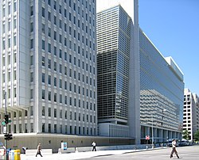

World Bank
 The World Bank building in Washington, D.C. | |
| Established | July 7, 1944 |
|---|---|
| Type | International financial institution |
| Legal status | Treaty |
| Headquarters | 1818 H Street, NW Washington, D.C., U.S.[1] |
Membership | 189 countries (IBRD)[2] 174 countries (IDA)[2] |
Key people |
|
Parent organization | World Bank Group |
| Website | worldbank.org |
{kind=link}
{kind=link}
The World Bank is an international financial institution that provides loans and grants to the governments of low- and middle-income countries for the purpose of pursuing capital projects.[5] The World Bank is the collective name for the International Bank for Reconstruction and Development (IBRD) and International Development Association (IDA), two of five international organizations owned by the World Bank Group. It was established along with the International Monetary Fund at the 1944 Bretton Woods Conference. After a slow start, its first loan was to France in 1947. In the 1970s, it focused on loans to developing world countries, shifting away from that mission in the 1980s. For the last 30 years, it has included NGOs and environmental groups in its loan portfolio. Its loan strategy is influenced by the United Nations' Sustainable Development Goals, as well as environmental and social safeguards.
As of 2022[update], the World Bank is run by a president and 25 executive directors, as well as 29 various vice presidents. IBRD and IDA have 189 and 174 member countries, respectively. The U.S., Japan, China, Germany and the U.K. have the most voting power. The bank aims loans at developing countries to help reduce poverty. The bank is engaged in several global partnerships and initiatives, and takes a role in working toward addressing climate change. The World Bank operates a number of training wings, and it works with the Clean Air Initiative and the UN Development Business. It works within the Open Data Initiative and hosts an Open Knowledge Repository.
The World Bank has been criticized as promoting inflation and harming economic development, causing protests in 1988 and 2000. There has also been criticism of the bank's governance and response to the COVID-19 pandemic. The president David Malpass faced strong criticism as he challenged the scientific consensus on climate change. He was replaced by Ajay Banga, supporting climate action.[6][7]
World Bank Group
[edit]The World Bank Group is an extended entity of five international organizations, and the parent organization of the World Bank, the collective name given to the first two listed organizations, the IBRD and the IDA:
- International Bank for Reconstruction and Development (IBRD)
- International Development Association (IDA)
- International Finance Corporation (IFC)
- Multilateral Investment Guarantee Agency (MIGA)
- International Centre for Settlement of Investment Disputes (ICSID)
History
[edit]20th century
[edit]{kind=link}
The World Bank was created at the 1944 Bretton Woods Conference, along with the International Monetary Fund (IMF). The president of the World Bank is traditionally an American.[9] The World Bank and the IMF are both based in Washington, D.C., and work closely with each other.

Although many countries were represented at the Bretton Woods Conference, the United States and United Kingdom were the most powerful in attendance and dominated the negotiations.[10]: 52–54 The intention behind the founding of the World Bank was to provide temporary loans to low-income countries that could not obtain loans commercially.[11] The bank may also make loans and demand policy reforms from recipients.[11]
In its early years, the bank made a slow start for two reasons: it was underfunded, and there were leadership struggles between the US executive director and the president of the organization. When the Marshall Plan went into effect in 1947, many European countries began receiving aid from other sources. Faced with this competition, the World Bank shifted its focus to non-European allies. Until 1968, its loans were earmarked for the construction of infrastructure works, such as seaports, highway systems, and power plants, that would generate enough income to enable a borrower country to repay the loan. In 1960, the International Development Association was formed (as opposed to a UN fund named SUNFED), providing soft loans to developing countries.
Before 1974, the reconstruction and development loans the World Bank made were relatively small. Its staff was aware of the need to instill confidence in the bank. Fiscal conservatism ruled, and loan applications had to meet strict criteria.[10]: 56–60
The first country to receive a World Bank loan was France in 1947. The bank's president at the time, John McCloy, chose France over two other applicants, Poland and Chile. The loan was for US$250 million, half the amount requested, and came with strict conditions. France had to agree to produce a balanced budget and give priority of debt repayment to the World Bank over other governments. World Bank staff closely monitored the use of the funds to ensure that the French government met the conditions. In addition, before the loan was approved, the United States State Department told the French government that its members associated with the Communist Party would first have to be removed. The French government complied and removed the Communist coalition government—the so-called tripartite. Within hours, the loan to France was approved.[12]
From 1974 to 1980, the bank concentrated on meeting the basic needs of people in the developing world. The size and number of loans to borrowers greatly increased, as loan targets expanded from infrastructure into social services and other sectors.[13]
These changes can be attributed to Robert McNamara, who was appointed to the presidency in 1968 by Lyndon B. Johnson.[10]: 60–63 McNamara implored bank treasurer Eugene Rotberg to seek out new sources of capital outside of the northern banks that had been the primary sources of funding. Rotberg used the global bond market to increase the capital available to the bank.[14] One consequence of the period of poverty alleviation lending was the rapid rise of Third World debt. From 1976 to 1980, developing world debt rose at an average annual rate of 20%.[15][16]
The World Bank Administrative Tribunal was established in 1980, to decide on disputes between the World Bank Group and its staff where allegation of non-observance of contracts of employment or terms of appointment had not been honored.[17]
McNamara was succeeded by U.S. President Jimmy Carter's nominee, Alden W. Clausen, in 1980.[18][19] Clausen replaced many members of McNamara's staff and crafted a different mission emphasis. His 1982 decision to replace the bank's Chief Economist, Hollis B. Chenery, with Anne Krueger was an example of this new focus. Krueger was known for her criticism of development funding and for describing Third World governments as "rent-seeking states".
During the 1980s, the bank emphasized lending to service Third World debt, and structural adjustment policies designed to streamline the economies of developing nations. UNICEF reported in the late 1980s that the structural adjustment programs of the World Bank had been responsible for "reduced health, nutritional and educational levels for tens of millions of children in Asia, Latin America, and Africa".[20]
Beginning in 1989, in response to harsh criticism from many groups, the bank began including environmental groups and NGOs in its loans to mitigate the past effects of its development policies that had prompted the criticism.[10]: 93–97 It also formed an implementing agency, in accordance with the Montreal Protocols, to stop ozone-depletion damage to the Earth's atmosphere by phasing out the use of 95% of ozone-depleting chemicals, with a target date of 2015. Since then, in accordance with its so-called "Six Strategic Themes", the bank has put various additional policies into effect to preserve the environment while promoting development. For example, in 1991, the bank announced that to protect against deforestation, especially in the Amazon, it would not finance any commercial logging or infrastructure projects that harm the environment.
21st century
[edit]In order to promote global public goods, the World Bank tries to control communicable diseases such as malaria, delivering vaccines to several parts of the world, and joining combat forces. In 2000, the bank announced a "war on AIDS" and in 2011 the bank joined the Stop Tuberculosis Partnership.[21]
Traditionally, based on a tacit understanding between the United States and Europe, the president of the World Bank has been selected from candidates nominated by the United States. This is significant because the World Bank tends to lend more readily to countries that are friendly with the United States, not because of direct U.S. influence but because of the employees of the World Bank.[22] In 2012, for the first time, two non-US citizens were nominated.
On 23 March 2012, U.S. President Barack Obama announced that the United States would nominate Jim Yong Kim as the next president of the bank.[23] Jim Yong Kim was elected on 27 April 2012 and reelected to a second five-year term in 2017. He announced that he would resign effective 1 February 2019.[24] He was replaced on an interim basis by now-former World Bank CEO Kristalina Georgieva, then by David Malpass on 9 April 2019.
In 2023, a new president was appointed: Ajay Banga. His term began on 2 June 2023. He was supported by the American president Joe Biden partly because he supports climate action. He is also expected to help low-income countries deal with debts. He is the first Indian American to lead the bank. He worked before as the head of Mastercard. The former president David Malpass faced criticism as he challenged the scientific consensus on climate change.[6]
COVID-19 pandemic
[edit]{kind=link}
In September 2020, during the COVID-19 pandemic, the World Bank announced a $12 billion plan to supply "low and middle income countries" with a vaccine once it was approved.[25] In June 2022, the bank reported that $10.1 billion had been allocated to supply 78 countries with the vaccine[26]
The US Treasury has committed $667 million for the World Bank's global Pandemic Fund, a third of the $2 billion the fund hopes to raise.[27] The Pandemic Fund, established in September 2022, is a collaborative initiative among countries, implementing partners, philanthropies, and civil society organizations. It aims to fund investments that address critical gaps in pandemic prevention, preparedness, and response capacities at national, regional, and global levels, with a particular focus on low- and middle-income countries.[28]
Evolution of criteria
[edit]Various developments brought the Millennium Development Goals targets for 2015 within reach in some cases. For the goals to be realized, six criteria must be met: stronger and more inclusive growth in Africa and fragile states, more effort in health and education, integration of the development and environment agendas, more as well as better aid, movement on trade negotiations, and stronger and more focused support from multilateral institutions like the World Bank.[29]
- Eradicate Extreme Poverty and Hunger: From 1990 through 2004, the proportion of people living in extreme poverty fell from almost a third to less than a fifth. Although results vary widely within regions and countries, the trend indicates that the world as a whole can meet the goal of halving the percentage of people living in poverty. Africa's poverty, however, is expected to rise, and most of the 36 countries where 90% of the world's undernourished children live are in Africa. Less than a quarter of countries are on track for achieving the goal of halving under-nutrition.
- Achieve Universal Primary Education: The percentage of children in school in developing countries increased from 80% in 1991 to 88% in 2005. Still, about 72 million children of primary school age, 57% of them girls, were not being educated as of 2005[update].
- Promote Gender Equality: The tide is turning slowly for women in the labor market, yet far more women than men—worldwide more than 60%—are contributing but unpaid family workers. The World Bank Group Gender Action Plan was created to advance women's economic empowerment and promote shared growth.
- Reduce Child Mortality: There is some improvement in survival rates globally; accelerated improvements are needed most urgently in South Asia and Sub-Saharan Africa. An estimated 10 million-plus children under five died in 2005; most of their deaths were from preventable causes.
- Improve Maternal Health: Almost all of the half-million women who die during pregnancy or childbirth every year live in Sub-Saharan Africa and Asia. There are numerous causes of maternal death that require a variety of health care interventions to be made widely accessible.
- Combat HIV/AIDS, Malaria, and Other Diseases: Annual numbers of new HIV infections and AIDS deaths have fallen, but the number of people living with HIV continues to grow. In the eight worst-hit southern African countries, prevalence is above 15 percent. Treatment has increased globally, but still meets only 30 percent of needs (with wide variations across countries). AIDS remains the leading cause of death in Sub-Saharan Africa (1.6 million deaths in 2007). There are 300 to 500 million cases of malaria each year, leading to more than 1 million deaths. Nearly all the cases and more than 95 percent of the deaths occur in Sub-Saharan Africa.
- Ensure Environmental Sustainability: Deforestation remains a critical problem, particularly in regions of biological diversity, which continues to decline. Greenhouse gas emissions are increasing faster than energy technology advancement.
- Develop a Global Partnership for Development: Donor countries have renewed their commitment. Donors have to fulfill their pledges to match the current rate of core program development. Emphasis is being placed on the Bank Group's collaboration with multilateral and local partners to quicken progress toward the MDGs' realization.
The World Bank's negative pledge clause prohibits its debtor countries from using public assets to repay other creditors before they repay the World Bank.[30]: 134
Environmental and social safeguards
[edit]To ensure that World Bank-financed operations do not compromise these goals but instead add to their realisation, the following environmental, social, and legal safeguards were defined: Environmental Assessment, Indigenous Peoples, Involuntary Resettlement, Physical Cultural Resources, Forests, Natural Habitats, Pest Management, Safety of Dams, Projects in Disputed Areas, Projects on International Waterways, and Performance Standards for Private Sector Activities.[31]
At the World Bank's 2012 annual meeting in Tokyo, a review of these safeguards was initiated, which was welcomed by several civil society organisations.[32] As a result, the World Bank developed a new Environmental and Social Framework, which has been in implementation since 1 October 2018.[33]
Leadership
[edit]The president of the bank is the president of the entire World Bank Group. The president is responsible for chairing meetings of the boards of directors and for overall management of the bank. Traditionally, the president of the bank has always been a U.S. citizen nominated by the United States, the largest shareholder in the bank (the managing director of the International Monetary Fund having always been a European). The nominee is subject to confirmation by the board of executive directors to serve a five-year, renewable term. While most World Bank presidents have had banking experience, some have not.[34][35]
The vice presidents of the bank are its principal managers, in charge of regions, sectors, networks and functions. There are two executive vice presidents, three senior vice presidents, and 24 vice presidents.[36]
The boards of directors consist of the World Bank Group president and 25 executive directors. The president is the presiding officer, and ordinarily has no vote except to break a tie. The executive directors as individuals cannot exercise any power or commit or represent the bank unless the boards specifically authorized them to do so. With the term beginning 1 November 2010, the number of executive directors increased by one, to 25.[37]
Presidents
[edit]| Name | Dates | Nationality | Previous work |
|---|---|---|---|
| Eugene Meyer | 1946–1946 | Newspaper publisher and Chairman of the Federal Reserve | |
| John J. McCloy | 1947–1949 | Lawyer and US Assistant Secretary of War | |
| Eugene R. Black, Sr. | 1949–1963 | Bank executive with Chase and executive director with the World Bank | |
| George Woods | 1963–1968 | Bank executive with First Boston Corporation | |
| Robert McNamara | 1968–1981 | President of the Ford Motor Company, US Defense Secretary under presidents John F. Kennedy and Lyndon B. Johnson | |
| Alden W. Clausen | 1981–1986 | Lawyer, bank executive with Bank of America | |
| Barber Conable | 1986–1991 | New York State Senator and US Congressman | |
| Lewis T. Preston | 1991–1995 | Bank executive with J.P. Morgan | |
| James Wolfensohn | 1995–2005 | Wolfensohn was a naturalised American citizen before taking office. Corporate lawyer and banker | |
| Paul Wolfowitz | 2005–2007 | US Ambassador to Indonesia, US Deputy Secretary of Defense, Dean of the School of Advanced International Studies (SAIS) at Johns Hopkins University, a prominent architect of 2003 invasion of Iraq, resigned World Bank post due to ethics scandal[38] | |
| Robert Zoellick | 2007–2012 | Deputy Secretary of State and US Trade Representative | |
| Jim Yong Kim | 2012–2019 | Former Chair of the Department of Global Health and Social Medicine at Harvard, president of Dartmouth College, naturalized American citizen[39] | |
| Kristalina Georgieva (acting) | 2019 | Former European Commissioner for the Budget and Human Resources and 2010's "European of the Year" | |
| David Malpass | 2019–2023 | Under Secretary of the Treasury for International Affairs | |
| Ajay Banga | 2023–present | Former head of Mastercard[6] |
Chief economists
[edit]| Name | Dates | Nationality |
|---|---|---|
| Hollis B. Chenery | 1972–1982 | |
| Anne Osborn Krueger | 1982–1986 | |
| Stanley Fischer | 1988–1990 | |
| Lawrence Summers | 1991–1993 | |
| Michael Bruno | 1993–1996 | |
| Joseph E. Stiglitz | 1997–2000 | |
| Nicholas Stern | 2000–2003 | |
| François Bourguignon | 2003–2007 | |
| Justin Yifu Lin | 2008–2012 | |
| Kaushik Basu | 2012–2016 | |
| Paul Romer | 2016–2018 | |
| Shanta Devarajan (Acting) | 2018–2018 | |
| Penny Goldberg[41][42][43] | 2018–2020 | |
| Aart Kraay (Acting)[44][45] | 2020–2020 | |
| Carmen Reinhart | 2020–2022 | |
| Indermit Gill | 2022–present |
Politicians who were World Bank employees
[edit]Some notable politicians who worked for the World Bank include:
- Former Afghanistan president Ashraf Ghani.[46]
- Fakhruddin Ahmed was the chief adviser of the interim Government of Bangladesh during the political crisis of 2006–2008.[47]
- Ngozi Okonjo-Iweala, former World Bank Managing Director who held several posts in the government of Nigeria, including Minister of Finance.
- Sri Mulyani Indrawati, former World Bank Managing Director and current Minister of Finance of Indonesia
Members
[edit]The International Bank for Reconstruction and Development (IBRD) has 189 member countries, while the International Development Association (IDA) has 174. Each member state of IBRD should also be a member of the International Monetary Fund (IMF) and only members of IBRD are allowed to join other institutions within the bank (such as IDA).[2] The five United Nations member states that are not members of the World Bank are Andorra, Cuba, Liechtenstein, Monaco, and North Korea. Kosovo is not a member of the UN, but is a member of the IMF and the World Bank Group, including the IBRD and IDA.
Voting power
[edit]In 2010, voting powers at the World Bank were revised to increase the voice of developing countries, notably China. The countries with most voting power are now the United States (15.85%), Japan (6.84%), China (4.42%), Germany (4.00%), the United Kingdom (3.75%), France (3.75%), India (2.91%),[48] Russia (2.77%), Saudi Arabia (2.77%) and Italy (2.64%). Under the changes, known as 'Voice Reform – Phase 2', countries other than China that saw significant gains included South Korea, Turkey, Mexico, Singapore, Greece, Czech Republic, Hungary, Brazil, India, and Spain. Most developed countries' voting power was reduced, along with a few developing countries such as Nigeria. The voting powers of the United States, Russia and Saudi Arabia were unchanged.[49][50]
The changes were brought about with the goal of making voting more universal in regards to standards, rule-based objective indicators, and transparency among other things. Now, developing countries have an increased voice in the "Pool Model", backed especially by Europe. Additionally, voting power is based on economic size in addition to the International Development Association contributions.[51]
List of 20 largest countries by voting power in each World Bank institution
[edit]The following table shows the subscriptions of the top 20 member countries of the World Bank by voting power in the following World Bank institutions as of December 2014 or March 2015: the International Bank for Reconstruction and Development (IBRD), the International Finance Corporation (IFC), the International Development Association (IDA), and the Multilateral Investment Guarantee Agency (MIGA). Member countries are allocated votes at the time of membership and subsequently for additional subscriptions to capital (one vote for each share of capital stock held by the member).[52][53][54][55]
| Rank | Country | IBRD | Country | IFC | Country | IDA | Country | MIGA |
|---|---|---|---|---|---|---|---|---|
| World | 2,201,754 | World | 2,653,476 | World | 24,682,951 | World | 218,237 | |
| 1 | 358,498 | 570,179 | 2,546,503 | 32,790 | ||||
| 2 | 166,094 | 163,334 | 2,112,243 | 9,205 | ||||
| 3 | 107,244 | 129,708 | 1,510,934 | 9,162 | ||||
| 4 | 97,224 | 121,815 | 1,368,001 | 8,791 | ||||
| 5 | 87,241 | 121,815 | 908,843 | 8,791 | ||||
| 6 | 87,241 | 103,747 | 810,293 | 5,756 | ||||
| 7 | 67,690 | 103,653 | 661,909 | 5,754 | ||||
| 8 | 67,155 | 82,142 | 629,658 | 5,754 | ||||
| 9 | 59,004 | 82,142 | 573,858 | 5,597 | ||||
| 10 | 54,877 | 62,392 | 521,830 | 5,451 | ||||
| 11 | 54,651 | 56,931 | 498,102 | 5,196 | ||||
| 12 | 42,948 | 51,410 | 494,360 | 4,048 | ||||
| 13 | 42,613 | 48,129 | 488,209 | 3,803 | ||||
| 14 | 42,348 | 44,863 | 412,322 | 3,245 | ||||
| 15 | 36,591 | 40,279 | 312,566 | 2,869 | ||||
| 16 | 36,463 | 38,929 | 275,755 | 2,832 | ||||
| 17 | 34,718 | 37,826 | 275,474 | 2,491 | ||||
| 18 | 33,296 | 32,402 | 258,209 | 2,436 | ||||
| 19 | 30,910 | 30,862 | 231,685 | 2,075 | ||||
| 20 | 26,293 | 28,895 | 218,506 | 2,075 |
Poverty reduction strategies
[edit]For the poorest developing countries in the world, the bank's assistance plans are based on poverty reduction strategies; by combining an analysis of local groups with an analysis of the country's financial and economic situation the World Bank develops a plan pertaining to the country in question. The government then identifies the country's priorities and targets for the reduction of poverty, and the World Bank instigates its aid efforts correspondingly.
Forty-five countries pledged US$25.1 billion in "aid for the world's poorest countries", aid that goes to the World Bank International Development Association (IDA), which distributes the loans to eighty poorer countries. Wealthier nations sometimes fund their own aid projects, including those for diseases. Robert B. Zoellick, the former president of the World Bank, said when the loans were announced on 15 December 2007, that IDA money "is the core funding that the poorest developing countries rely on".[56]
World Bank organizes the Development Marketplace Awards, a grant program that surfaces and funds development projects with potential for development impact that are scalable and/or replicable. The grant beneficiaries are social enterprises with projects that aim to deliver social and public services to groups with the lowest incomes.
Global partnerships and initiatives
[edit]The World Bank has been assigned temporary management responsibility of the Clean Technology Fund (CTF), focused on making renewable energy cost-competitive with coal-fired power as quickly as possible, but this may not continue after UN's Copenhagen climate change conference in December 2009, because of the bank's continued investment in coal-fired power plants.[57] (In December 2017, Kim announced the World Bank would no longer finance fossil fuel development.)
Together with the World Health Organization, the World Bank administers the International Health Partnership (IHP+). IHP+ is a group of partners committed to improving the health of citizens in developing countries. Partners work together to put international principles for aid effectiveness and development cooperation into practice in the health sector. IHP+ mobilizes national governments, development agencies, civil society, and others to support a single, country-led national health strategy in a well-coordinated way.
Climate change
[edit]World Bank President Jim Yong Kim said in 2012:
A 4-degree warmer world can, and must be, avoided—we need to hold warming below 2 degrees ... Lack of action on climate change threatens to make the world our children inherit a completely different world than we are living in today. Climate change is one of the single biggest challenges facing development, and we need to assume the moral responsibility to take action on behalf of future generations, especially the poorest.[58]
A World Bank report into climate change in 2012 noted that (p. xiii) "even with the current mitigation commitments and pledges fully implemented, there is roughly a 20 percent likelihood of exceeding 4 °C by 2100." This is despite the fact that the "global community has committed itself to holding warming below 2 °C to prevent 'dangerous' climate change". Furthermore, "a series of recent extreme events worldwide highlight the vulnerability of all countries ... No nation will be immune to the impacts of climate change."[59]
The World Bank doubled its aid for climate change adaptation from $2.3bn (£1.47bn) in 2011 to $4.6bn in 2012. The planet is now 0.8 °C warmer than in pre-industrial times. It says that 2 °C warming will be reached in 20 to 30 years.[60][61]
In December 2017, Kim announced the World Bank would no longer finance fossil fuel development,[62][63] but a 2019 International Consortium of Investigative Journalists article found that the bank continues "to finance oil and gas exploration, pipelines and refineries," that "these fossil fuel investments make up a greater share of the bank's current energy lending portfolio than renewable projects," and that the bank "has yet to meaningfully shift away from fossil fuels."[64]
EU finance ministers joined civil sector groups, including Extinction Rebellion, in November 2019 in calling for an end to World Bank funding of fossil fuels.[65][66][67]
In 2021, the World Bank offered support to Kazakhstan to help the country in its mission for decarbonization and carbon neutrality.[68]
In 2023 a new president was appointed: Ajay Banga. He was supported by the American president Joe Biden partly because he supports climate action. The former president David Malpass faced criticism as he challenged the scientific consensus on climate change.[69]
In May 2024, the Board of the Fund for Responding to Loss and Damage held its first historic meeting abroad in Abu Dhabi. This important UN Climate Change initiative was operationalized during the COP28 UN Climate Change Conference in December 2023. During the three-day meeting, the board elected Jean-Christophe Donnellier of France and Richard Sherman of South Africa as Co-Chairs. Furthermore, initiating a process to select an Executive Director, the Board started working on access modalities, financial instruments, facilities, arrangements, and ensuring observer participation in the Board meetings and related proceedings. An essential part of the meeting was the discussion between the board and the World Bank on establishing the fund as a World Bank-hosted financial intermediary fund (FIF), specifically focusing on ensuring that the most vulnerable frontline communities can access the fund's resources directly.[70]
Food security
[edit]- Global Food Security Program: Launched in April 2010, six countries alongside the Bill and Melinda Gates Foundation have pledged $925 million for food security. To date, the program has helped eight countries, promoting agriculture, research, trade in agriculture, etc.
- Launched Global Food Crisis Response Program: Given grants to approximately 40 nations for seeds, etc. for improving productivity.
- In process of increasing its yearly spending for agriculture to $6–8 billion from earlier $4 billion.
- Runs various nutrition programs across the world, e.g., vitamin A doses for children, school meals, etc.[71]
Training wings
[edit]Global Operations Knowledge Management Unit
[edit]The World Bank Institute (WBI) was a "global connector of knowledge, learning and innovation for poverty reduction". It aimed to inspire change agents and prepare them with essential tools that can help achieve development results.
WBI had four major strategies to approach development problems: innovation for development, knowledge exchange, leadership and coalition building, and structured learning. World Bank Institute (WBI) was formerly known as Economic Development Institute (EDI), established on 11 March 1955 with the support of the Rockefeller and Ford Foundations. The purpose of the institute was to provide an open place where senior officials from developing countries could discuss development policies and programs. Over the years, EDI grew significantly and in 2000, the institute was renamed as the World Bank Institute. Sanjay Pradhan is the past vice president of the World Bank Institute.[72] As of 2019, World Bank Institute functions have been mostly encapsulated by a new unit Global Operations Knowledge Management Unit (GOKMU), which is now responsible for knowledge management and learning across the bank.
Global Development Learning Network
[edit]The Global Development Learning Network (GDLN) is a partnership of over 120 learning centers (GDLN Affiliates) in nearly 80 countries around the world. GDLN Affiliates collaborate in holding events that connect people across countries and regions for learning and dialogue on development issues.
GDLN clients are typically NGOs, government, private sector, and development agencies who find that they work better together on subregional, regional, or global development issues using the facilities and tools offered by GDLN Affiliates. Clients also benefit from the ability of Affiliates to help them choose and apply these tools effectively and to tap development practitioners and experts worldwide. GDLN Affiliates facilitate around 1000 video conference-based activities a year on behalf of their clients, reaching some 90,000 people worldwide. Most of these activities bring together participants in two or more countries over a series of sessions. A majority of GDLN activities are organized by small government agencies and NGOs.
GDLN Asia Pacific
[edit]The GDLN in the East Asia and Pacific region has experienced rapid growth and Distance Learning Centers now operate or are planned in 20 countries: Australia, Mongolia, Cambodia, China, Indonesia, Singapore, Philippines, Sri Lanka, Japan, Papua New Guinea, South Korea, Thailand, Laos, Timor Leste, Fiji, Afghanistan, Bangladesh, India, Nepal, and New Zealand. With over 180 Distance Learning Centers, it is the largest development learning network in the Asia and Pacific region. The Secretariat Office of GDLN Asia Pacific is located in the Center of Academic Resources of Chulalongkorn University, Bangkok, Thailand.
GDLN Asia Pacific was launched at the GDLN's East Asia and Pacific regional meeting held in Bangkok from 22 to 24 May 2006. Its vision is to become "the premier network exchanging ideas, experience and know-how across the Asia Pacific Region". GDLN Asia Pacific is a separate entity to The World Bank. It has endorsed its own Charter and Business Plan and, in accordance with the Charter, a GDLN Asia Pacific Governing Committee has been appointed.
The committee comprises China (2), Australia (1), Thailand (1), The World Bank (1), and finally, a nominee of the Government of Japan (1). The organization is currently hosted by Chulalongkorn University in Bangkok, Thailand, a founding member of the GDLN Asia Pacific.
The Governing Committee has determined that the most appropriate legal status for the GDLN AP in Thailand is a "Foundation". The World Bank is engaging a solicitor in Thailand to process all documentation in order to obtain this status.
GDLN Asia Pacific is built on the principle of shared resources among partners engaged in a common task, and this is visible in the organizational structures that exist, as the network evolves. Physical space for its headquarters is provided by the host of the GDLN Centre in Thailand – Chulalongkorn University; Technical expertise and some infrastructure is provided by the Tokyo Development Learning Centre (TDLC); Fiduciary services are provided by Australian National University (ANU) Until the GDLN Asia Pacific is established as a legal entity in Thailand, ANU, has offered to assist the governing committee, by providing a means of managing the inflow and outflow of funds and of reporting on them. This admittedly results in some complexity in contracting arrangements, which need to be worked out on a case-by-case basis and depends to some extent on the legal requirements of the countries involved.
JUSTPAL Network
[edit]A Justice Sector Peer-Assisted Learning (JUSTPAL) Network was launched in April 2011 by the Poverty Reduction and Economic Management (PREM) Department of the World Bank's Europe and Central Asia (ECA) Region. JUSTPAL's objective is to provide an online and offline platform for justice professionals to exchange knowledge, good practices, and peer-driven improvements to justice systems and thereby support countries to improve their justice sector performance, quality of justice, and service delivery to citizens and businesses.
The JUSTPAL Network includes representatives of judiciaries, ministries of justice, prosecutors, anti-corruption agencies, and other justice-related entities from across the globe. It has active members from more than 50 countries.
To facilitate fruitful exchange of reform experiences and sharing of applicable good practices, JUSTPAL has organized its activities under five Communities of Practice (COPs): Budgeting for the Justice Sector; Information Systems for Justice Services; Justice Sector Physical Infrastructure; Court Management and Administration; and Prosecution and Anti-Corruption Agencies.
Country assistance strategies
[edit]As a guideline to the World Bank's operations in any particular country, a Country Assistance Strategy is produced in cooperation with the local government and any interested stakeholders and may rely on analytical work performed by the bank or other parties.
Multi-Donor Trust Fund
[edit]The Global Procurement Partnership (GPP) MDTF is a seven-year program that aims to advance worldwide and country-level procurement reforms, increase coordination and maximize impact. The GPP MDTF seeks to contribute to this overall objective through (i) global standards and models that lead to modern, effective, and transparent procurement systems; (ii) development of country capacities for better procurement systems; and (iii) systematized learning and research on the impact of effective procurement reform approaches.[73]
The GPP MDTF provides the World Bank and its partners the space to initiate conversations on public procurement’s key role in spurring better development outcomes for a country. It promotes a global dialogue on the value of well-functioning procurement systems by supporting enhanced donor coordination, responsible innovation, and evidence-based research. [74]
Clean Air Initiative
[edit]Clean Air Initiative (CAI) is a World Bank initiative to advance innovative ways to improve air quality in cities through partnerships in selected regions of the world by sharing knowledge and experiences. It includes electric vehicles.[75] Initiatives like this help address and tackle pollution-related diseases.
United Nations Development Business
[edit]Based on an agreement between the United Nations and the World Bank in 1981, Development Business became the official source for World Bank Procurement Notices, Contract Awards, and Project Approvals.[76]
In 1998, the agreement was renegotiated, and included in this agreement was a joint venture to create an online version of the publication. Today, Development Business is the primary publication for all major multilateral development banks, U.N. agencies, and several national governments, many of which have made the publication of their tenders and contracts in Development Business a mandatory requirement.[76]
The World Bank or the World Bank Group is also a sitting observer in the United Nations Development Group.[77]
Open data initiative
[edit]The World Bank collects and processes large amounts of data and generates them on the basis of economic models. These data and models have gradually been made available to the public in a way that encourages reuse,[78] whereas the recent publications describing them are available as open access under a Creative Commons Attribution License, for which the bank received the SPARC Innovator 2012 award.[79]
The World Bank also endorses the Principles for Digital Development.[80]
Grants table
[edit]The following table lists the top 15 DAC 5 Digit Sectors[81] to which the World Bank has committed funding, as recorded in its International Aid Transparency Initiative (IATI) publications. The World Bank states on the IATI Registry website that the amounts "will cover 100% of IBRD and IDA development flows" but will not cover other development flows.[82]
| Committed funding (US$ millions) | ||||||||||||
|---|---|---|---|---|---|---|---|---|---|---|---|---|
| Sector | Before 2007 | 2007 | 2008 | 2009 | 2010 | 2011 | 2012 | 2013 | 2014 | 2015 | 2016 | Sum |
| Road transport | 4,654.2 | 1,993.5 | 1,501.8 | 5,550.3 | 4,032.3 | 2,603.7 | 3,852.5 | 2,883.6 | 3,081.7 | 3,922.6 | 723.7 | 34,799.8 |
| Social/ welfare services | 613.1 | 208.1 | 185.5 | 2,878.4 | 1,477.4 | 1,493.2 | 1,498.5 | 2,592.6 | 2,745.4 | 1,537.7 | 73.6 | 15,303.5 |
| Electrical transmission/ distribution | 1,292.5 | 862.1 | 1,740.2 | 2,435.4 | 1,465.1 | 907.7 | 1,614.9 | 395.7 | 2,457.1 | 1,632.2 | 374.8 | 15,177.8 |
| Public finance management | 334.2 | 223.1 | 499.7 | 129.0 | 455.3 | 346.6 | 3,156.8 | 2,724.0 | 3,160.5 | 2,438.9 | 690.5 | 14,158.6 |
| Rail transport | 279.3 | 284.4 | 1,289.0 | 912.2 | 892.5 | 1,487.4 | 841.8 | 740.6 | 1,964.9 | 1,172.2 | −1.6 | 9,862.5 |
| Rural development | 335.4 | 237.5 | 382.8 | 616.7 | 2,317.4 | 972.0 | 944.0 | 177.8 | 380.9 | 1,090.3 | −2.5 | 7,452.4 |
| Urban development and management | 261.2 | 375.9 | 733.3 | 739.6 | 542.1 | 1,308.1 | 914.3 | 258.9 | 747.3 | 1,122.1 | 212.2 | 7,214.9 |
| Business support services and institutions | 113.3 | 20.8 | 721.7 | 181.4 | 363.3 | 514.0 | 310.0 | 760.1 | 1,281.9 | 1,996.0 | 491.3 | 6,753.7 |
| Energy policy and administrative management | 102.5 | 243.0 | 324.9 | 234.2 | 762.0 | 654.9 | 902.1 | 480.5 | 1,594.2 | 1,001.8 | 347.9 | 6,648.0 |
| Agricultural water resources | 733.2 | 749.5 | 84.6 | 251.8 | 780.6 | 819.5 | 618.3 | 1,040.3 | 1,214.8 | 824.0 | −105.8 | 7,011.0 |
| Decentralisation and support to subnational government | 904.5 | 107.9 | 176.1 | 206.7 | 331.2 | 852.8 | 880.6 | 466.8 | 1,417.0 | 432.5 | 821.3 | 6,597.3 |
| Disaster prevention and preparedness | 66.9 | 2.7 | 260.0 | 9.0 | 417.2 | 609.5 | 852.9 | 373.5 | 1,267.8 | 1,759.7 | 114.2 | 5,733.5 |
| Sanitation - large systems | 441.9 | 679.7 | 521.6 | 422.0 | 613.1 | 1,209.4 | 268.0 | 55.4 | 890.6 | 900.8 | 93.9 | 6,096.3 |
| Water supply - large systems | 646.5 | 438.1 | 298.3 | 486.5 | 845.1 | 640.2 | 469.0 | 250.5 | 1,332.4 | 609.9 | 224.7 | 6,241.3 |
| Health policy and administrative management | 661.3 | 54.8 | 285.8 | 673.8 | 1,581.4 | 799.3 | 251.5 | 426.3 | 154.8 | 368.1 | 496.0 | 5,753.1 |
| Other | 13,162.7 | 6,588.3 | 8,707.1 | 11,425.7 | 17,099.5 | 11,096.6 | 16,873.4 | 13,967.1 | 20,057.6 | 21,096.5 | 3,070.3 | 140,074.5 |
| Total | 24,602.6 | 13,069.4 | 17,712.6 | 27,152.6 | 33,975.6 | 26,314.8 | 34,248.6 | 27,593.9 | 43,748.8 | 41,905.2 | 7,624.5 | 297,948.5 |
Open Knowledge Repository
[edit]The World Bank hosts the Open Knowledge Repository (OKR)[83] as an official open access repository for its research outputs and knowledge products. The World Bank's repository is listed in the Registry of Research Data Repositories re3data.org.[84]
Criticisms and controversy
[edit]The World Bank has long been criticized by non-governmental organizations, such as the indigenous rights group Survival International, and academics, including Henry Hazlitt, Ludwig Von Mises, and its former Chief Economist Joseph Stiglitz.[85][86][87] Hazlitt argued that the World Bank along with the monetary system it was designed within would promote world inflation and "a world in which international trade is State-dominated" when they were being advocated.[88] Stiglitz argued that the free market reform policies that the bank advocates are often harmful to economic development if implemented badly, too quickly ("shock therapy"), in the wrong sequence or in weak, uncompetitive economies.[86][89]
One of the most common criticisms of the World Bank has been the way it is governed. While the World Bank represents 188 countries, it is run by a small number of economically powerful countries. These countries (which also provide most of the institution's funding) choose the bank's leadership and senior management, and their interests dominate.[90]: 190 Titus Alexander argues that the unequal voting power of western countries and the World Bank's role in developing countries makes it similar to the South African Development Bank under apartheid, and therefore a pillar of global apartheid.[91]: 133–141
In the 1990s, the World Bank and the IMF forged the Washington Consensus, policies that included deregulation and liberalization of markets, privatization and the downscaling of government. Though the Washington Consensus was conceived as a policy that would best promote development, it was criticized for ignoring equity, employment, and how reforms like privatization were carried out. Stiglitz argued that the Washington Consensus placed too much emphasis on GDP growth and not enough on the permanence of growth or on whether growth contributed to better living standards.[87]: 17
The United States Senate Committee on Foreign Relations report criticized the World Bank and other international financial institutions for focusing too much "on issuing loans rather than on achieving concrete development results within a finite period of time" and called on the institution to "strengthen anti-corruption efforts".[92]
James Ferguson has argued that the main effect of many development projects carried out by the World Bank and similar organizations is not the alleviation of poverty. Instead, the projects often serve to expand the exercise of bureaucratic state power. His case studies of development projects in Thaba-Tseka show that the World Bank's characterization of the economic conditions in Lesotho was flawed, and the bank ignored the political and cultural character of the state in crafting its projects. As a result, the projects failed to help the poor but succeeded in expanding the government bureaucracy.[93]
Criticism of the World Bank and other organizations often takes the form of protesting, such as the World Bank Oslo 2002 Protests,[94] the 2007 October Rebellion,[95] and the 1999 Battle of Seattle.[96] Such demonstrations have occurred all over the world, even among the Brazilian Kayapo people.[97]
Another source of criticism has been the tradition of having an American head the bank, implemented because the United States provides the majority of World Bank funding. "When economists from the World Bank visit poor countries to dispense cash and advice," observed The Economist in 2012, "they routinely tell governments to reject cronyism and fill each important job with the best candidate available. It is good advice. The World Bank should take it."[98]
In 2021, an independent inquiry of the World Bank's Doing Business reports by the law firm WilmerHale found that World Bank leaders, including then-Chief Executive Kristalina Georgieva and then-President Jim Yong Kim,[99] pressured staff members of the bank to alter data to inflate the rankings for China, Saudi Arabia, Azerbaijan and the United Arab Emirates.[100][101]
In September 2023, it was revealed that the World Bank had poured billions of dollars into fossil fuel projects in 2022. Campaigners estimated that about $3.7bn in trade finance was supplied to oil and gas projects despite the World Bank's green pledges. [102]
Structural adjustment
[edit]The effect of structural adjustment policies on poor countries has been one of the most significant criticisms of the World Bank.[103] The 1979 energy crisis plunged many countries into economic crisis.[104]: 68 The World Bank responded with structural adjustment loans, which distributed aid to struggling countries while enforcing policy changes in order to reduce inflation and fiscal imbalance. Some of these policies included encouraging production, investment and labour-intensive manufacturing, changing real exchange rates, and altering the distribution of government resources. Structural adjustment policies were most effective in countries with an institutional framework that allowed these policies to be implemented easily. For some countries, particularly in Sub-Saharan Africa, economic growth regressed and inflation worsened.
By the late 1980s, some international organizations began to believe that structural adjustment policies were worsening life for the world's poor, due to a reduction in social spending and an increase in the price of food, as subsidies were lifted. It also have been criticized for being Debt-trap diplomacy. The World Bank changed structural adjustment loans, allowing for social spending to be maintained, and encouraging a slower change to policies such as transfer of subsidies and price rises.[104]: 70 In 1999, the World Bank and the IMF introduced the Poverty Reduction Strategy Paper approach to replace structural adjustment loans.[105]: 147
Fairness of assistance conditions
[edit]Some critics,[106] most prominently the author Naomi Klein, are of the opinion that the World Bank Group's loans and aid have unfair conditions attached to them that reflect the interests, financial power and political doctrines (notably the Washington Consensus) of the bank and the countries that are most influential within it. Among other allegations, Klein says the Group's credibility was damaged "when it forced school fees on students in Ghana in exchange for a loan; when it demanded that Tanzania privatise its water system; when it made telecom privatisation a condition of aid for Hurricane Mitch; when it demanded labour 'flexibility' in Sri Lanka in the aftermath of the Asian tsunami; when it pushed for eliminating food subsidies in post-invasion Iraq".[107]
A study of the period 1970–2004 found that a less-developed country would on average receive more World Bank projects during any period when it occupied one of the rotating seats on the UN Security Council.[108]
Sovereign immunity
[edit]The World Bank requires sovereign immunity from countries it deals with.[109][110][111] Sovereign immunity waives a holder from all legal liability for their actions. It is proposed that this immunity from responsibility is a "shield which The World Bank wants to resort to, for escaping accountability and security by the people".[109] As the United States has veto power, it can prevent the World Bank from taking action against its interests.[109]
PricewaterhouseCoopers
[edit]World Bank favored PricewaterhouseCoopers as a consultant in a bid for privatizing the water distribution in Delhi, India.[112]
COVID-19
[edit]The World Bank has been criticized for the slow response of its Pandemic Emergency Financing Facility (PEF), a fund that was created to provide money to help manage pandemic outbreaks. The terms of the PEF, which is financed by bonds sold to private investors, prevent any money from being released from the fund until 12 weeks after the outbreak was initially detected (23 March). The COVID-19 pandemic met all other requirements for the funding to be released in January 2020.[113]
Critics have argued that the terms of the PEF are too stringent, and the 12-week delay means that the funding will be much less effective than if it was released to assist governments in initially containing the outbreak. They argue that the fund prioritizes the interests of the private bondholders over public health.[114]
Cronyism and Elite Capture
[edit]Criticism was also leveled under the presidency of Jim Yong Kim, particularly regarding financial management and staff morale. Reports of a controversial $94,000 bonus awarded to the Bank's CFO, Bertrand Badré (2013-2016), at his request on top of a tax-free salary of $379,000, while significant staff cuts and austerity measures were being implemented, drew criticism from within and outside the organization. This bonus, revealed by Senior Country Officer Fabrice Houdart amidst a broader effort by Kim to implement cost-cutting reforms, sparked debates over transparency, ethics, and the organization's commitment to its own principles, further exacerbating concerns about trust and leadership within the World Bank. Badré renounced the bonus and left the Bank shortly after. [115][116] [117] [118] [119]
In May 2023, British newspaper The Guardian reported leaked recordings from some World Bank staff referring to Robert Malpass, the son of the institution's president David Malpass, as a "prince" and an "important little fellow" who could go "running to daddy" if things went wrong. Malpass served as undersecretary of the US Treasury in the Trump administration before being appointed by Trump in February 2019 to be World Bank's president. Before Malpass became president, his son Robert had joined the International Finance Corporation (IFC), a branch of the World Bank Group that lends money to private sector businesses and whose USD 5.5 billion funding from a USD 13 billion World Bank capital increase was secured by the US Treasury at the time that David Malpass was the Treasury's undersecretary.[120]
Suspension of loans to Uganda
[edit]On 9 August 2023, the World Bank announced it was suspending new loans to Uganda because it claims that a new anti-homosexuality act, enacted in May 2023, contradicts its core values on human rights. The World Bank joined the United States in imposing sanctions against Uganda over the anti-homosexuality law. Uganda dismissed the move by the World Bank as unjust and hypocritical.[121]
Funding to Tanzania
[edit]The World Bank funded a program in Tanzania supposed to help nature conservation. The program was criticized because it led to severe violation of human rights toward the Maasai people.[122]
See also
[edit]- Clean Energy for Development Investment Framework
- The Economist Democracy Index
- Energy Sector Management Assistance Program (ESMAP)
- International Finance Corporation
- New Development Bank
- Swedish International Development Cooperation Agency
- The Swiss constituency
References
[edit]- ^ "About the World Bank". worldbank.org.
- ^ a b c https://www.worldbank.org/en/about/leadership/members "Member Countries". Retrieved on 2 January 2022.
- ^ "David Malpass, a US Treasury official and Donald Trump's pick, appointed World Bank president". scroll.in. Retrieved 6 April 2019.
- ^ "World Bank Group Leadership". World Bank. Retrieved 2 August 2018.
- ^ "About Us". World Bank. 14 October 2008. Retrieved 13 June 2019.
- ^ a b c Fleury, Michelle (4 May 2023). "Biden pick Ajay Banga gets top World Bank job". BBC. Retrieved 7 May 2023.
- ^ Lo, oe (23 February 2023). "US backs Ajay Banga to lead World Bank in climate fight". Climate Home news. Retrieved 7 May 2023.
- ^ "The Founding Fathers". International Monetary Fund. Archived from the original on 22 August 2017. Retrieved 11 August 2012.
- ^ The New York Times, 17 March 2015, "France, Germany and Italy Say They'll Join China-Led Bank"
- ^ a b c d Goldman, Michael (2005). Imperial Nature: The World Bank and Struggles for Social Justice in the Age of Globalization. New Haven, CT: Yale University Press. ISBN 978-0-300-11974-9.
- ^ a b Clemens, Michael A.; Kremer, Michael (2016). "The New Role for the World Bank". Journal of Economic Perspectives. 30 (1): 53–76. doi:10.1257/jep.30.1.53. ISSN 0895-3309.
- ^ Bird, Kai (1992). The Chairman: John J. McCloy, the Making of the American Establishment. New York City: Simon & Schuster. ISBN 978-0-671-45415-9.: 288, 290–291
- ^ World Bank. "World Bank Historical Chronology: 1970–1979". World Bank Group. Archived from the original on 13 November 2011. Retrieved 31 May 2012.
- ^ Rotberg, Eugene (1994). "Financial Operations of the World Bank". Bretton Woods: looking to the future: commission report, staff review, background papers. Washington, D.C.: Bretton Woods Commission. Archived from the original on 5 July 2016. Retrieved 13 August 2012.
- ^ Mosley, Paul; Harrigan, Jane; Toye, John (1995). Aid and Power: The World Bank and Policy-Based Lending, 2nd Edition. Vol. 1. Abingdon, UK: Routledge. ISBN 978-0-415-13209-1.
- ^ Toussaint, Eric (1999). Your Money or Your Life!: The Tyranny of Global Finance. London: Pluto Press. ISBN 978-0-7453-1412-9.
- ^ World Bank. "World Bank Administrative Tribunal". World Bank Group. Archived from the original on 29 December 2011. Retrieved 14 August 2011.
- ^ NELSON D. SCHWARTZ (25 January 2013). "A.W. Clausen, Former Bank of America Chief, Dies at 89". The New York Times. Retrieved 27 October 2016.
Mr. Clausen was chosen by President Jimmy Carter to lead the World Bank shortly before Mr. Carter was defeated by Ronald Reagan in 1980, but the new administration supported Mr. Clausen's nomination.
- ^ "Tom Clausen, BofA, World Bank head, dies". SFGate. 23 January 2013. Retrieved 27 October 2016.
That focus paid dividends when President Jimmy Carter nominated him in 1980 to succeed Robert McNamara as president of the World Bank.
- ^ Cornia, Giovanni Andrea; Jolly, Richard; Stewart, Frances, eds. (1987). Adjustment with a Human Face: Protecting the Vulnerable and Promoting Growth. New York, NY: Oxford University Press USA. ISBN 978-0-19-828609-7.
- ^ World Bank. "Results". World Bank Group. Retrieved 31 May 2012.
- ^ Clark, Richard; Dolan, Lindsay (2021). "Pleasing the Principal: US Influence in World Bank Policymaking". American Journal of Political Science. 65: 36–51. doi:10.1111/ajps.12531. S2CID 219757123. Retrieved 8 December 2020.
- ^ Office of the Press Secretary (23 March 2012). "President Obama Announces U.S. Nomination of Dr. Jim Yong Kim to Lead World Bank". whitehouse.gov. Retrieved 23 March 2012 – via National Archives.
- ^ "Jim Yong Kim steps down as President of World Bank". BBC News. 7 January 2019.
- ^ Elliot, Larry (29 September 2020). "World Bank announces $12bn plan for poor countries to buy Covid vaccines". The Guardian. Retrieved 30 September 2020.
- ^ "World Bank Support for Country Access to COVID-19 Vaccines". World Bank. Retrieved 4 October 2022.
- ^ "United States Announces Up to $667 Million Planned Contribution to the Pandemic Fund to Support Pandemic Prevention, Preparedness, and Response". U.S. DEPARTMENT OF THE TREASURY. 24 July 2024.
- ^ "The Pandemic Fund". The World Bank. Retrieved 24 July 2024.
- ^ World Bank. "Millennium Development Goals". World Bank Group. Retrieved 31 May 2012.
- ^ Chen, Muyang (2024). The Latecomer's Rise: Policy Banks and the Globalization of China's Development Finance. Ithaca and London: Cornell University Press. ISBN 9781501775857. JSTOR 10.7591/jj.6230186.
- ^ The World Bank. "Environmental and Social Policies". World Bank Group. Retrieved 4 December 2020.
- ^ Korinna Horta (February 2013). "Most relevant review". dandc.eu.
- ^ The World Bank (October 2018). "Environmental and Social Framework". World Bank Group.
- ^ Hurlburt, Heather (23 March 2012). "Why Jim Yong Kim would make a great World Bank president". The Guardian. Retrieved 23 March 2012.
- ^ World Bank. "Leadership". World Bank Group. Retrieved 17 July 2012.
- ^ World Bank. "Senior Management". World Bank Group. Archived from the original on 16 April 2013. Retrieved 12 August 2012.
- ^ World Bank. "Boards of Directors". World Bank Group. Archived from the original on 16 April 2013. Retrieved 12 August 2012.
- ^ "Wolfowitz Laid Out Terms for Partner's Pay Package", The Financial Times, 12 April 2007, accessed 14 May 2007
- ^ Heather Hurlburt (23 March 2012). "Why Jim Yong Kim would make a great World Bank president". The Guardian. London. Retrieved 9 March 2016.
Kim is a naturalized US citizen who was born in Korea.
- ^ Mayeda, Andrew (24 January 2018). "Paul Romer Steps Down as World Bank Chief Economist After Rocky Stint". Bloomberg.com.
- ^ "Yale's Penny Goldberg appointed chief economist at the World Bank". 26 April 2018. Retrieved 27 April 2018.
- ^ "World Bank Group President Appoints Pinelopi Koujianou Goldberg as Chief Economist". Retrieved 27 April 2018.
- ^ Lawder, David (5 February 2020). "World Bank Loses Chief Economist in under 15 months". Reuters. Retrieved 3 March 2020.
- ^ "World Bank Chief Economist announces resignation". Channel News Asia. 6 February 2020. Archived from the original on 6 February 2020. Retrieved 3 March 2020.
- ^ "Aart Kraay". World Bank. Retrieved 3 March 2020.
- ^ "Ashraf Ghani | president of Afghanistan". Encyclopedia Britannica. Retrieved 23 August 2021.
- ^ "The Daily Star Web Edition Vol. 5 Num 933". archive.thedailystar.net. Retrieved 23 August 2021.
- ^ "Developing nations get more say in World Bank affairs". The Times of India. 26 April 2010. Retrieved 5 April 2014.
- ^ International Bank for Reconstruction and Development (2010). IBRD 2010 Voting Power Realignment (PDF) (Report). World Bank Group. Archived (PDF) from the original on 29 December 2011. Retrieved 14 August 2011.
- ^ Veloo, Betsy May (26 April 2010). "China given more influence in World Bank". RTHK. Archived from the original on 5 June 2011. Retrieved 26 April 2010.
- ^ Stumm, Mario (March 2011). "World Bank: More responsibility for developing countries". D+C. Retrieved 12 August 2011.
- ^ "International Bank for Reconstruction and Development" (PDF). March 2015. Archived from the original (PDF) on 6 September 2015. Retrieved 25 October 2014.
- ^ "International Finance Corporation" (PDF). March 2015. Archived from the original (PDF) on 6 September 2015. Retrieved 26 March 2015.
- ^ "International Development Association" (PDF). December 2014. Archived from the original (PDF) on 6 September 2015. Retrieved 26 March 2015.
- ^ "Multilateral Investment Guarantee Agency" (PDF). December 2014. Archived from the original (PDF) on 6 September 2015. Retrieved 26 March 2015.
- ^ Landler, Mark (15 December 2007). "Britain Overtakes U.S. as Top World Bank Donor". The New York Times. Retrieved 14 August 2011.
- ^ Wheeler, David (20 May 2008). "Climate Change in Nashville: A Gathering Storm for the World Bank?". Center for Global Development. Retrieved 9 November 2008.
- ^ "New Report Examines Risks of 4 Degree Hotter World by End of Century" (Press release). World Bank. 18 November 2012. Retrieved 12 October 2013.
- ^ Why a 4 degree centrigrade warmer world must be avoided November 2012 World Bank
- ^ What Climate Change Means for Africa, Asia and the Coastal Poor World Bank 19 June 2012
- ^ World's poorest will feel brunt of climate change, warns World Bank The Guardian 19 June 2012
- ^ Ness, Erik, "The Cost of Skepticism", Brown Alumni Monthly, March/April 2018, p.16
- ^ "World Bank to quit upstream oil and gas projects after 2019". Devex. 12 December 2017. Retrieved 26 August 2020.
- ^ "The World Bank is Still Hooked on Fossil Fuels Despite Climate Pledge". ICIJ. 10 April 2019. Retrieved 6 December 2019.
- ^ Camino Gonzalez, Jenipher (8 November 2019). "EU finance ministers call for end to fossil fuel funding". Deutsche Welle. Retrieved 6 December 2019.
- ^ "No More Excuses: The World Bank Must Halt All Funding for Fossil Fuels". Common Dreams. Retrieved 6 December 2019.
- ^ Lang, Marissa J. (6 December 2019). "Climate change protesters block downtown D.C. streets in hours-long protest". Washington Post. Retrieved 8 December 2019.
- ^ "World Bank to Support Kazakhstan on its Path to Decarbonization and Carbon Neutrality, Says World Bank VP for Europe and Central Asia". The Astana Times. 19 November 2021. Retrieved 20 November 2021.
- ^ Fleury, Michelle (4 May 2023). "Biden pick Ajay Banga gets top World Bank job". BBC. Retrieved 7 May 2023.
- ^ "The Board of the Fund for Responding to Loss and Damage Holds its Historic First Meeting". UN Climate Change. 6 May 2024. Retrieved 6 May 2024.
- ^ "Food Security". World Bank. Retrieved 14 October 2020.
- ^ World Bank Institute. "About WBI". World Bank Group. Archived from the original on 29 May 2012. Retrieved 31 May 2012.
- ^ "Global Procurement Partnership Multi-Donor Trust Fund". World Bank. Retrieved 9 August 2024.
- ^ "World Bank Announces Additional $1.49 Billion Financing Support for Ukraine". The World Bank Group. 7 June 2022.
- ^ Clean Air Initiative. "About Us". Clean Air Initiative-Asia Center. Archived from the original on 25 June 2010. Retrieved 31 May 2010.
- ^ a b "About Us". United Nations. Archived from the original on 13 August 2012. Retrieved 19 August 2012.
- ^ United Nations Development Group. "UNDG Members". United Nations. Archived from the original on 11 May 2011. Retrieved 19 August 2012.
- ^ Strom, Stephanie (2 July 2011). "World Bank Is Opening Its Treasure Chest of Data". The New York Times. Retrieved 20 August 2012.
- ^ SPARC. "SPARC Innovator: The World Bank". Association of Research Libraries. Archived from the original on 8 July 2012. Retrieved 11 July 2012.
- ^ Vasdev, Samhir (18 April 2016). "Why the World Bank endorses the Principles for Digital Development". Information and Communications for Development.
- ^ "DAC 5 Digit Sector". The IATI Standard. Retrieved 4 September 2016.
- ^ "About - The World Bank - IATI Registry". Retrieved 4 September 2016.
- ^ "Open Knowledge Repository (OKR)". World Bank. Retrieved 22 October 2013.
- ^ "World Bank Entry in re3data.org". www.re3data.org. Retrieved 21 July 2014.
- ^ Stiglitz, Joseph E. (2003). The Roaring Nineties: A New History of the World's Most Prosperous Decade. New York, NY: W. W. Norton & Company. ISBN 978-0-393-05852-9.
- ^ a b Stiglitz, Joseph E. (2003). Globalization and Its Discontents. New York, NY: W. W. Norton & Company. ISBN 978-0-393-32439-6.
- ^ a b Stiglitz, Joseph E. (2007). Making Globalization Work. New York, NY: W. W. Norton & Company. ISBN 978-0-393-33028-1.
- ^ Hazlitt, Henry (1984). From Bretton Woods to World Inflation: A Study of the Causes and Consequences. Washington, D.C.: Regnery Publishing. ISBN 978-0-89526-617-0.
- ^ Schneider, Jane (2002). "World Markets: Anthropological Perspectives". In MacClancy, Jeremy (ed.). Exotic No More: Anthropology on the Front Lines. Chicago, IL: University of Chicago Press. ISBN 978-0-226-50013-3.
- ^ Woods, Ngaire (2007). The Globalizers: The IMF, the World Bank, and Their Borrowers. Ithaca, NY: Cornell University Press. ISBN 978-0-8014-7420-0.
- ^ Alexander, Titus (1996). Unravelling Global Apartheid: An Overview of World Politics. Cambridge, UK: Polity. ISBN 978-0-7456-1352-9.
- ^ Committee on Foreign Relations, United States Senate, 111th Congress (2010). The International Financial Institutions: A Call For Change (PDF) (Report). U.S. Government Printing Office. Retrieved 20 August 2012.
{{cite report}}: CS1 maint: multiple names: authors list (link) CS1 maint: numeric names: authors list (link) - ^ Ferguson, James; Lohmann, Larry (September–October 1994). "The Anti-Politics Machine" (PDF). The Ecologist. 24 (5): 176–181. Archived from the original (PDF) on 16 May 2019. Retrieved 13 April 2017.
- ^ Gibbs, Walter (25 June 2002). "Europe: Norway: Protests As World Bank Meets". The New York Times. Retrieved 20 August 2012.
- ^ Williams, Clarence; Ruane, Michael E. (20 October 2007). "Violence Erupts at Protest in Georgetown". The Washington Post. Retrieved 30 May 2008.
- ^ Wilson, Kimberly A.C. (7 December 1999). "Embattled police chief resigns". Seattle Post-Intelligencer. Retrieved 19 May 2008.
- ^ Clendenning, Alan (21 May 2008). "Amazon Indians Attack Official Over Dam Project". National Geographic. Associated Press. Archived from the original on 28 May 2008. Retrieved 21 May 2008.
- ^ "Hats off to Ngozi". The Economist. 31 March 2012. Retrieved 2 April 2012.
- ^ "Inquiry puts ex-World Bank officials under scrutiny on China". AP News. 17 September 2021. Archived from the original on 25 September 2023.
- ^ "Probe finds World Bank changed data to boost China ranking". Al-Jazeera. 17 September 2021. Archived from the original on 6 September 2023.
- ^ Wang, Philip (17 September 2021). "Investigation finds World Bank leaders pushed staffers to boost rankings for China and Saudi Arabia in high-profile reports". CNN Business. Archived from the original on 6 September 2023.
- ^ Harvey, Fiona (12 September 2023). "World Bank spent billions of dollars backing fossil fuels in 2022, study finds". The Guardian. ISSN 0261-3077. Retrieved 12 September 2023.
- ^ Graeber, David (2009). Direct Action: An Ethnography. AK Press. pp. 442–443. ISBN 978-1-904859-79-6.
- ^ a b deVries, Barend A. (1996). "The World Bank's Focus on Poverty". In Griesgraber, Jo Marie; Gunter, Bernhard G. (eds.). The World Bank: Lending on a Global Scale. London, UK: Pluto Press. ISBN 978-0-7453-1049-7.
- ^ Tan, Celine (2007). "The poverty of amnesia: PRSPs in the legacy of structural adjustment". In Stone, Diane; Wright, Christopher (eds.). The World Bank and Governance: A Decade of Reform and Reaction. New York, NY: Routledge. ISBN 978-0-415-41282-7.
- ^ Hardstaff, Peter (2003). "Treacherous conditions: How IMF and World Bank policies tied to debt relief are undermining development" (PDF). World Development Movement. Archived from the original (PDF) on 29 March 2014. Retrieved 12 May 2013.
- ^ Klein, Naomi (27 April 2007). "The World Bank has the perfect standard bearer". The Guardian. Retrieved 12 May 2013.
- ^ Dreher, Axel; Sturm, Jan-Egbert; Vreeland, James Raymond (1 January 2009). "Development aid and international politics: Does membership on the UN Security Council influence World Bank decisions?". Journal of Development Economics. 88 (1): 1–18. doi:10.1016/j.jdeveco.2008.02.003. hdl:10419/50418. ISSN 0304-3878.
- ^ a b c IFI Watch (2004). "The World Bank and the Question of Immunity" (PDF). IFI Watch – Bangladesh. 1 (1): 1–10. Archived from the original (PDF) on 8 November 2004. Retrieved 4 September 2004.
- ^ World Bank (2007). Sovereign Immunity (PDF) (Report). World Bank Group. Retrieved 20 August 2012.
- ^ Hasson, Adam Isaac (2002). "Extraterritorial Jurisdiction and Sovereign Immunity on Trial: Noriega, Pinochet, and Milosevic – Trends in Political Accountability and Transnational Criminal Law". Boston College International and Comparative Law Review. 25 (1): 125–158. Retrieved 25 April 2012.
- ^ "WB channels Delhi water for PWC". The Times of India. 29 July 2005.
- ^ Gross A (25 February 2020). "World Bank's pandemic bonds sink as coronavirus spreads". Financial Times. Retrieved 4 March 2020.
- ^ Seibt S (26 February 2020). "'Useless' pandemic bonds offer little hope for dealing with coronavirus". France 24. Retrieved 4 March 2020.
- ^ "How Much Money Is the World Bank Spending to Intimidate Staff?". HuffPost. Retrieved 30 March 2024.
- ^ "Opprobrium from the atrium". The Economist. Retrieved 30 March 2024.
- ^ Feder, J. Lester (9 April 2015). "LGBT Employee Leader Under Investigation At World Bank". BuzzFeed News. Retrieved 30 March 2024.
- ^ Moloney, Kim; Bowman, James S.; West, Jonathan P. (2018). "Challenges Confronting Whistleblowing and the International Civil Servant". Public Personnel Management. 39 (4): 611–634. doi:10.1177/0734371X18767247. Retrieved 30 March 2024.
- ^ "Is Jim Yong Kim Destroying the World Bank?". Foreign Policy. 27 April 2016. Retrieved 30 March 2024.
- ^ Makortoff, Kalyeena; correspondent, Kalyeena Makortoff Banking (12 April 2023). "World Bank staff were told to give special treatment to son of Trump official". The Guardian. ISSN 0261-3077. Retrieved 9 May 2023.
{{cite news}}:|last2=has generic name (help) - ^ Mackintosh, Mackintosh; Juma, Mercy (9 August 2023). "World Bank halts new Uganda loans over anti-LGBTQ+ law - BBC News". BBC News. Retrieved 10 August 2023.
- ^ "URGENT ALERT: Tanzanian Government on a Rampage Against Indigenous People". Oakland Institute. Retrieved 10 March 2024.
Further reading
[edit]- Ascher, W. "New development approaches and the adaptability of international agencies: the case of the World Bank" International Organization 1983. 37, 415–439.
- Bazbauers, Adrian Robert. The World Bank and Transferring Development (Springer, 2018).
- Bergsen, H., Lunde, L., Dinosaurs or Dynamos? The United Nations and the World Bank at the Turn of the Century. (Earthscan, London, 1999).
- Bilbert, C., and C. Vines, eds. The World Bank: Structures and Policies (Cambridge UP, 2000)
- Brown, Michael Barratt. Africa's choices: after thirty years of the World Bank (Routledge, 2019).
- Davis, Gloria. A history of the social development network in The World Bank, 1973-2003 (The World Bank, 2004).
- Heldt, Eugénia C., and Henning Schmidtke. "Explaining coherence in international regime complexes: How the World Bank shapes the field of multilateral development finance." Review of International Political Economy (2019): 1–27. online
- Heyneman, Stephen P. "The history and problems in the making of education policy at the World Bank, 1960–2000." International Journal of Educational Development 23 (2003) 315–337
- Hurni, Bettina S. The Lending Policy Of The World Bank In The 1970s (1980)
- Mason, Edward S., and Robert E. Asher. The world bank since Bretton Woods (Brookings Institution Press, 2010).
- Pereira, João Márcio Mendes. "The World Bank as a political, intellectual, and financial actor (1944-1994)." Relaciones Internacionales 26.52 (2017): online in English
- Pereira, João Márcio Mendes. "Assaulting Poverty: Politics and Economic Doctrine in the History of the World Bank (1944-2014)." Revista De História 174 (2016): 235–265. online
- Polak, Jacques J., and James M. Boughton. "The World Bank and the International Monetary Fund: A Changing Relationship." in Economic Theory and Financial Policy (Routledge, 2016) pp. 92–146.
- Salda, Anne C. M., ed. Historical dictionary of the World Bank (1997)
- Toussaint, Eric : The World Bank: A Critical History, London: Pluto Press 2023
- Weaver, Catherine. 2008. Hypocrisy Trap: The World Bank and the Poverty of Reform. Princeton University Press.
- Woods, Ngaire. The globalizers: the IMF, the World Bank, and their borrowers (Cornell UP, 2014).
- World Bank. A Guide to the World Bank (2nd ed. 2007) online Archived 13 October 2015 at the Wayback Machine